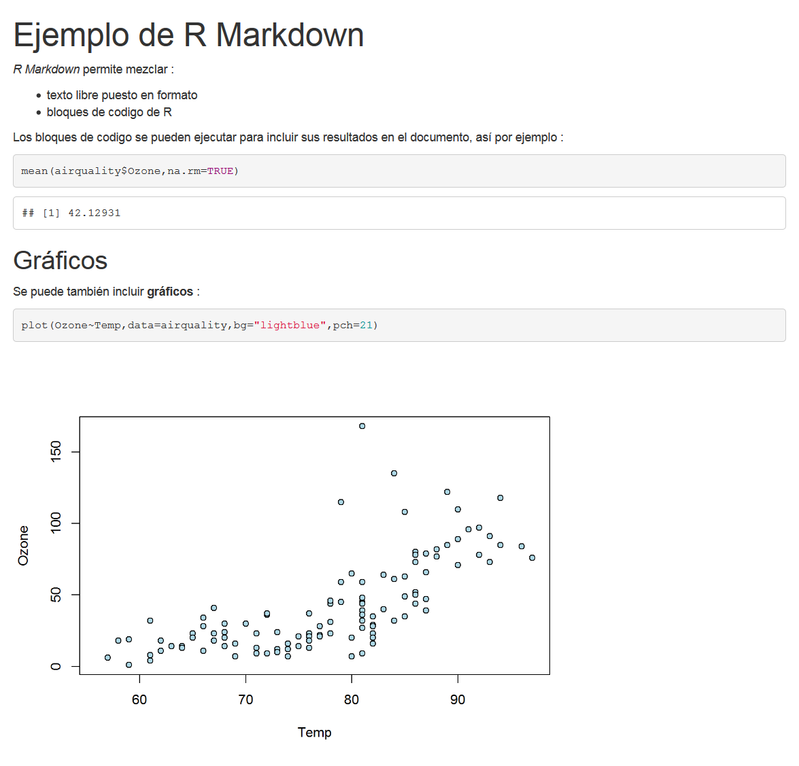

3 Rmarkdown
Esta sección está dedicada a una extension de R: rmarkdownque permite crear documentos automatizados que combinan texto con código, tablas y gráficos generados directamente por R.
Este paquete no es complejo sino, más bien, extensos y llenos de detalles. El objetivo de esta sesión es recorrer sus posibilidades.
Rmarkdown permite generar documentos dinámicos al mezclar texto formateado y resultados generados por R. Los documentos generados pueden estar en HTML, PDF, Word y muchos otros formatos.
Las ventajas de esta herramienta son numerosas:
- El código y sus resultados no están separados de los comentarios asociados a ellos
- El documento final es reproducible
- El documento se puede actualizar fácilmente, por ejemplo, si los datos de origen se han modificado.
Por lo tanto, es una herramienta muy práctica para exportar, comunicar y difundir resultados estadísticos.
Este documento se ha generado a partir de archivos R Markdown ^ [Más precisamente gracias a la extensión bookdown que permite generar documentos de tipo libro].
Aprender Rmarkdown implica aprender dos cosas distintas:
- Markdown, un formato para escribir documentos simples en modo texto. Tiene la ventaja de ser fácilmente legible por humanos pero, a la vez, procesable programáticamente para volcarlos en otros formatos: pdf, html, …
- La integración entre R y markdown
Aquí, un documento de R Markdown básico:
---
title: "Ejemplo de R Markdown"
output: pdf_document
---
*R Markdown* permite mezclar :
- texto libre puesto en formato
- bloques de codigo de R
Los bloques de codigo se pueden ejecutar para incluir sus resultados en el documento,
así por ejemplo :
```{r}
mean(airquality$Ozone,na.rm=TRUE)
```
## Gráficos
Se puede también incluir __gráficos__ :
```{r}
plot(Ozone~Temp,data=airquality,bg="lightblue",pch=21)
```Al “compilar” el documento, el texto se formatea, los bloques de código se ejecutan, sus resultados se agregan al documento y todo se transforma en uno de los diferentes formatos posibles (html, pdf, word, …).
Aquí, la representación del documento anterior en formato HTML

3.1 Rmarkdown en 15 mn
Para aprender Markdown, se recomiendan los dos siguientes ejercicios :
Crear un fichero .Rmd usando File > New File > R Markdown.
Al crear un nuevo fichero de tipo R Markdown, RStudio proporciona, en lugar de uno vacío, una plantilla que muestra algunas de las opciones disponibles en este formato. Eso facilita el siguiente ejercicio:
Modificar el fichero de ejemplo creado en el ejercicio anterior añadiéndole títulos de varios niveles, párrafos de texto, cursivas, negritas, enlaces, listas (numeradas y sin numerar), etc. usando como guía el Cheat Sheet del paquete. Compilar el documento (p.e., pulsando el botón con la etiqueta Knit HTML situado encima del panel de edición de RStudio) para inspeccionar el resultado final.
Se puede también generar documentos en formato Word y PDF. Para estos formato, es necesario tener instalados los programas : MS Word, LibreOffice o similar para el primero y LaTeX para el segundo.
El segundo de los componentes de Rmarkdown (y lo que lo diferencia de Markdown a secas) es la posibilidad de incorporar bloques de código en el hilo del documento. Estos bloques de código se procesan durante la compilación del documento y los resultados que generan (tablas, gráficos, etc.) se integran en la salida. La plantilla de fichero Rmarkdown que genera RStudio incluye unos cuantos ejemplos de bloques de código.
Insertar sobre el documento (o sobre una nueva plantilla) bloques de código de R que hagan alguna cosa. Los bloques de código incluyen opciones en su encabezamiento (p.e., para que un bloque se ejecute o no; para que el código se muestre o se oculte en el documento final, etc.). Las opciones disponibles se pueden consultar en el Cheat Sheet del paquete.
3.2 Elementos de un documento Rmarkdown
3.2.1 Encabezado (préambulo)
La primera parte del documento es su encabezado. Se encuentra al principio del documento y está delimitado por tres guiones (---) antes y después:
---
title: "Titulo"
author: "Nombre Apellido"
date: "2 de mayo de 2018"
output: html_document
---Este encabezado contiene los metadatos del documento, como su título, autor, fecha, más una serie de opciones posibles que permiten configurar o personalizar todo el documento y su representación. Aquí, por ejemplo, la línea output: html_document indica que el documento generado tendrá un formato HTML.
3.2.2 Texto del documento
El cuerpo del documento consiste en texto con la sintaxis de Markdown: un marcado ligero que permite establecer niveles de títulos o formatear texto. Por ejemplo, el siguiente texto:
Este es un texto *en cursiva* y **en negrita**.
Se puede definir una lista así:
- primer elemento
- segundo elementoQue dará la siguiente salida
Este es un texto en cursiva y en negrita.
Se puede definir una lista así:
- primer elemento
- segundo elemento
Los títulos de diferentes niveles se pueden definir comenzando una línea con uno o más caracteres #:
# Titulo de nivel 1
## Titulo de nivel 2
### Titulo de nivel 3Cuando se han definido los títulos, al hacer clic en el icono Show document outline en el extremo derecho de la barra de herramientas asociada al archivo, se muestra una tabla dinámica de contenidos generada automáticamente a partir de los títulos que permite navegar fácilmente en el documento.
La sintaxis de Markdown permite también insertar enlaces o imágenes. Por ejemplo, la siguiente sintaxis:
[ISCIII](http://www.isciii.es/)Dará el siguiente vinculo:
En RStudio, el menú Help y luego Markdown quick reference proporciona una descripción más completa de la sintaxis.
3.2.3 Bloques de codigo
Además del texto libre en formato Markdown, un documento R Markdown contiene, como su nombre indica, código R. Este código se incluye en fragmentos definidos por la siguiente sintaxis:
Como esta cadena de caracteres no es muy fácil de escribir, se puede usar R en el menú Insertar de RStudio, o teclear el atajo Ctrl+Alt+i.
Se puede dar un nombre al bloque y se indica directamente después de r:
{r nombre_del_bloque}
No es obligatorio, pero puede ser útil en caso de error de compilación, para identificar el bloque que causó el problema. Atención, no podemos tener dos bloques con el mismo nombre.
Además de un nombre, se puede pasar a un bloque una serie de opciones para modificar su comportamiento.
```{r echo = FALSE, warning = FALSE}
x <- 1:5
```Una de las opciones más útiles es la opción echo. Por defecto echo=TRUE, y el bloque de código R se inserta en el documento generado:
x <- 1:5
print(x)## [1] 1 2 3 4 5Pero, si la opción echo=FALSE, entonces el código R ya no se inserta en el documento, y solo se el resultado será visible:
## [1] 1 2 3 4 5Aquí hay una lista de algunas de las opciones más comunes:
| opción | valores | descripción |
|---|---|---|
| echo | TRUE / FALSE | Mostrar o no el código R en el documento |
| eval | TRUE / FALSE | Ejecutar o no el código R en tiempo de compilación |
| warning | TRUE / FALSE | Mostrar o no las advertencias generadas por el bloque |
| message | TRUE / FALSE | Mostrar o no los mensajes generados por el bloque |
Hay muchas otras opciones descritas en la Guía de referencia de R Markdown.
3.3 Tablas con Rmarkdown
3.3.1 Tablas cruzadas
Por defecto, las tablas generadas por la función table se muestran tal y como aparecen en la consola de R, es decir, en texto sin formato:
# titanic<-ftable(Survived~Class,data=Titanic)
# Supervivencia al Titanic según clase
titanic<-apply(Titanic,c(1,4),sum)
titanic## Survived
## Class No Yes
## 1st 122 203
## 2nd 167 118
## 3rd 528 178
## Crew 673 212Su presentación se puede mejorar utilizando la función kable de la extensión knitr:
library(knitr)
kable(titanic,caption="Supervivencia a la catastrofe del Titanic según la clase")| No | Yes | |
|---|---|---|
| 1st | 122 | 203 |
| 2nd | 167 | 118 |
| 3rd | 528 | 178 |
| Crew | 673 | 212 |
3.3.2 Base de datos
Respecto a las bases de datos (tibble o data.frame), la presentación HTML por defecto es el contenido que aparece en consola. Este formato puede ser poco adecuado si la tabla excede una cierta dimensión.
Una alternativa es usar la función paged_table, que muestra una representación HTML paginada de la base:
require(gapminder)
rmarkdown::paged_table(gapminder)Otra alternativa es la función datatable de la extensión DT, que ofrece aún más interactividad:
library(DT)
datatable(gapminder)En cualquier caso, no es recomendable mostrar una tabla de datos muy grandes de esta manera porque el archivo HTML resultante contendría todos los datos y, por lo tanto, sería muy grande.